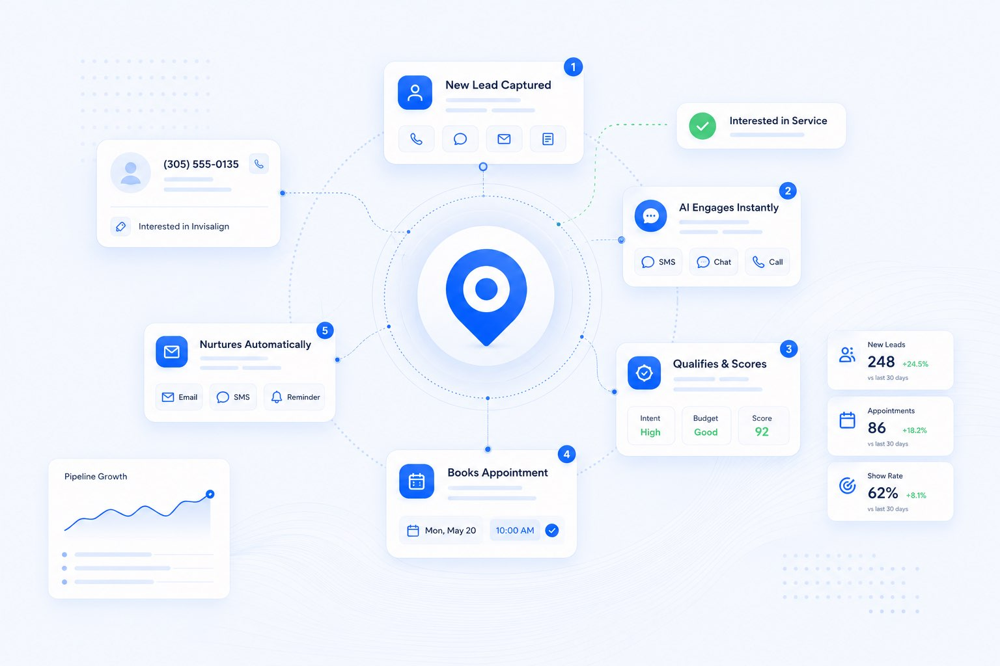
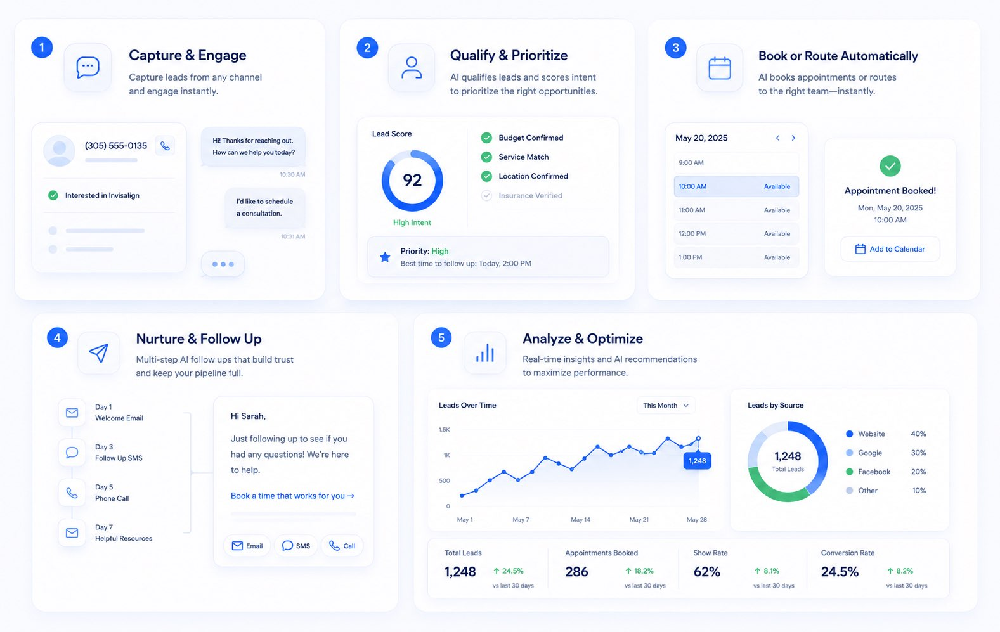
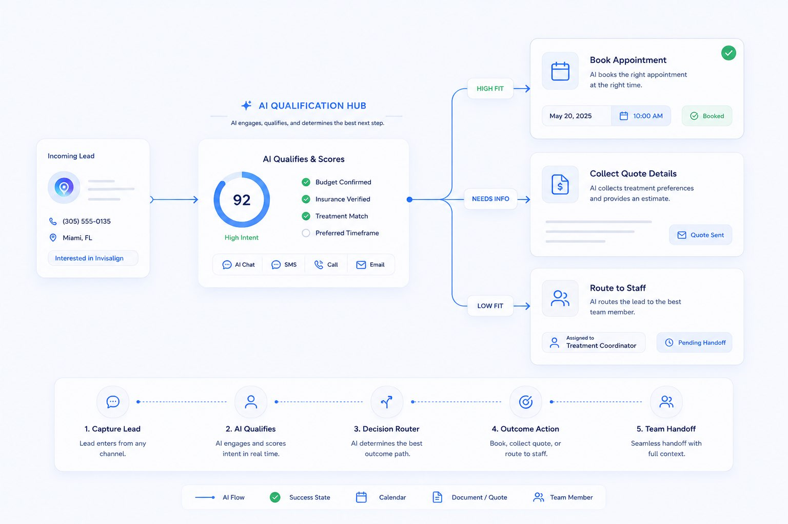
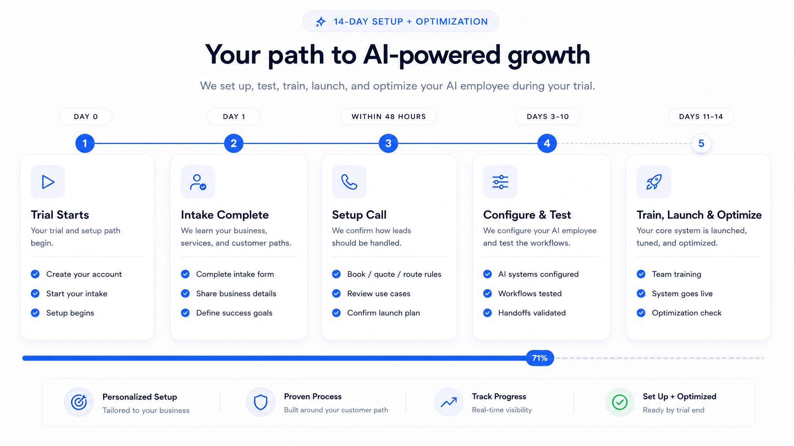
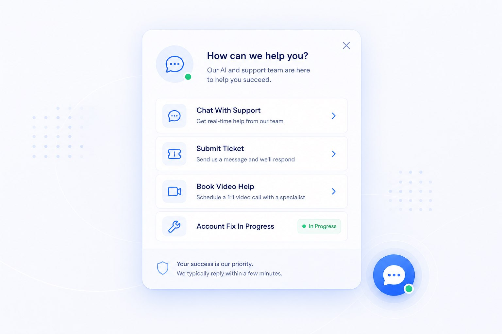
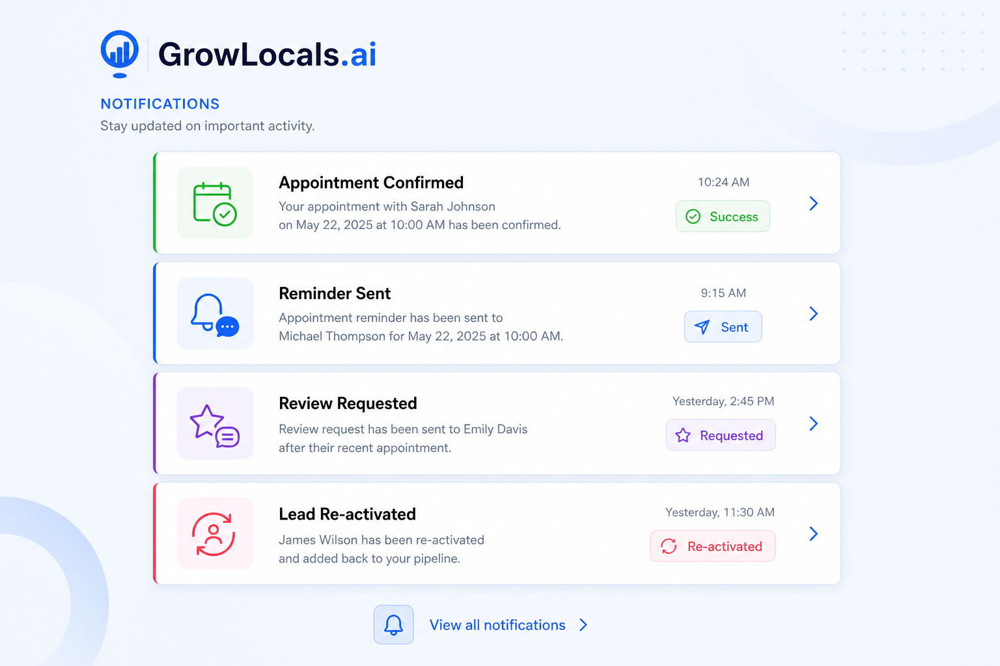
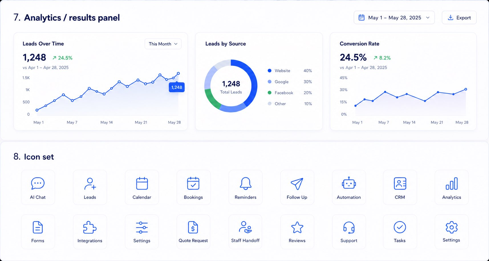

☎
Calls get missed
When nobody answers, the customer may call the next business.
GrowLocals.ai gives your local business an AI employee for calls, website questions, quote requests, booking interest, follow-up, and reviews — fully set up for you.

People call while your team is busy. Website visitors ask questions after hours. Some customers need to book. Some need a quote. Some need a human handoff. Happy customers need review follow-up.
When nobody answers, the customer may call the next business.
Website visitors and message leads do not wait around for slow follow-up.
Not every lead should book. Some need a quote, staff review, or next-step handoff.
Happy customers become proof only when the business follows up consistently.
GrowLocals captures, qualifies, routes, follows up, and optimizes around the customer paths that matter for your business.

Some businesses want appointments booked. Others need quote details collected. Others need qualified requests routed to staff. GrowLocals is set up around your actual customer path.

By the end of your trial, the goal is for your core AI employee to be set up, tested, launched, and optimized around how your business handles customers.

Your setup path begins immediately.
We learn your business and customer paths.
We confirm book, quote, route, and review rules.
Your AI systems and handoffs are built and tested.
Your core system is tuned for real use.

GrowLocals includes setup and support so the system can be adjusted, fixed, and improved as your business uses it. You are not buying a blank software account — you are getting a supported AI employee.

The system is not just installed and forgotten. GrowLocals helps your business see the customer opportunities being captured and where follow-up can improve.

Loyd has spent 10+ years owning and operating local businesses, working hands-on with the problems that decide whether customer interest turns into revenue: missed calls, slow follow-up, handoffs, reviews, and reactivation.
Start the AI Growth Program with card required. Your $1,500 setup fee is waived, White-Glove Setup is included, and the goal is to have your core system set up, tested, and optimized by the end of your trial.
No. It can book where appropriate, but it can also collect quote details, route requests, capture leads, and follow up.
No. It covers gaps, handles repetitive communication, and gives your team better context.
No. GrowLocals handles setup during the trial and supports your team after launch.
You complete intake, book setup, and we configure the system around your business.
No. After the trial, the program is $297/month, month-to-month.
To have the core system set up, tested, launched, and optimized around your customer path.
Start your free 14-day trial and let GrowLocals set up the calls, chat, quote routing, follow-up, and review workflows that help turn interest into customers.
Start Your Free 14-Day Trial →